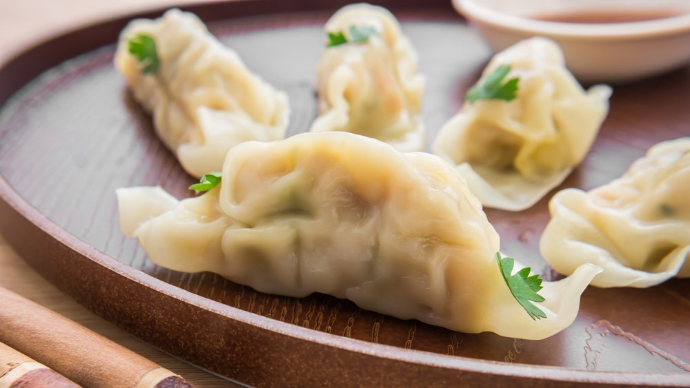

Dumplings

Description
These dumplings are yummy!One bite and you are going to feel like Anton Ego from Ratatouille going back to your childhood!
Ingredients
- 1 cup all-purpose flour
- 2 teaspoons baking powder
- 1 teaspoon white sugar
- 1/2 teaspoon salt
- 1 tablespoon margarine
- 1/2 cup milk
Steps
- Stir together flour,baking powder,sugar and salt in medium size bowl.Cut in butter until crumbly.Stir in milk to make a soft dough.
- Drop by spoonfuls into boiling stew.Cover and simmer 15 minutes without lifting lid.Serve.
- To make parsley dumplings,add 1 tablespoon parsley flakes to the dry ingredients.